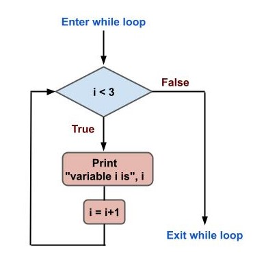

Chapter 9: Loops, for and while, break and continue#
One of the most interesting and useful techniques in every programming language is the ability to automatically repeat a task a given number of times. Computers are perfect for such repetitive tasks, because they do it fast and they don’t get tired of it as humans do.
The examples you are going to work with in this article are so simplistic that when you run them it will seem like the computations are practically instantaneous. This is not at all true! Computers takes some determined time to run a program, and this depends on how fast your computer itself is and the complexity of your program.
In this article you will learn the basics of loops, how they work, when to use them and its different use cases.
For loops#
The first type of loop you will learn is the for loop. Let’s take an example where you have a list of names, each of which is represented as a Python string. You can print each individual name separately by using a for loop.
A for loop is constructed beginning with the for keyword, followed by a temporal variable name (let’s call it name for this example), then the keyword in, and finally a generator (the list of names in this case), and ending with a colon :.
Below the line containing the for statement comes the body, which is an indented block code, similar to the if statements. For this example the body of the for loop will be just a print with the name variable.
Iterating over a tuple#
for name in ('John', 'Jane', 'Karen'):
print(name)
# John
# Jane
# Karen
As you can see the program prints each of the names in a new line. The list of names was given as a tuple, which plays the role of the generator. The program you just run is equivalent to the following:
print('Jonh')
print('Jane')
print('Karen')
# John
# Jane
# Karen
I hope you already feel the power of for loops. Just imagine having a list with thousands of names. The second example where you have to make a print for each name written manually is not good at all. With the for loop you would do it much more easily. The only problem is that you need to have the list of names ready to give them to the loop. That list can also be read from a file or a database.
Iterating a list#
Let’s see another example with numbers this time. Given a list of integer numbers, how would you go about printing the square of each of them? The variable can be called number, and the generator is just a list of numbers. Let’s work with the numbers from 1 to 6. To print the square of each number, make a print with number**2.
for number in [1, 2, 3, 4, 5, 6]:
print(number**2)
# 1
# 4
# 9
# 16
# 25
# 36
Iterating a string#
for loops can also be used to iterate over a string. Let’s see what happens when you try to make a for loop with a string as the generator:
for c in 'hello world!':
print(c)
# h
# e
# l
# l
# o
#
# w
# o
# r
# l
# d
# !
Each of the characters belonging to the string 'hello world!' is printed to the screen when looping over it. This can be useful to find specific characters or substrings on a large text or document.
Iterating a dictionary#
Iterating over a dictionary is also possible as you can see in this example:
d = {'name': 'John', 'age': 23, 'score': 74.5}
for item in d:
print(item)
# name
# age
# score
But the only thing that prints when iterating over the dictionary are the keys, but not the values. How can you print both the keys and the values of the dictionary? One way is to use the square bracket notation using the variable name d and the item temporal variable:
d = {'name': 'John', 'age': 23, 'score': 74.5}
for item in d:
print(item, d[item])
# name John
# age 23
# score 74.5
Combining for and if statements#
You can combine if statements with your for loops. Let’s make an example with a list of names, and print only those that start with ‘J’.
for name in ('John', 'Jane', 'Karen', 'Jack', 'Ruth'):
if name[0] == 'J':
print(name)
# John
# Jane
# Jack
Pay attention to the indentation levels. In this example you see two different indentation levels: one for the for loop, and a second one for the if statement.
The range function#
A highly common way of working with for loops is to use the range function. You will learn about Python functions later in this course, but the range function will be introduced now.
The range function is used to make a generator commonly used with for loops, instead of making a list or a tuple. For example, say you want to print the numbers from 1 to 100. Making a list of those numbers with what you know so far can be laborious, but with the range function is as easy as writing range(1, 101). The first parameter is included, while the second is not included. This is similar to the index slice notation you learned in a previous tutorial.
for i in range(1, 101):
print(i)
# 1
# 2
# 3
# 4
...
# 99
# 100
If you don’t include the first parameter, the default will be 0:
for i in range(5):
print(i)
# 0
# 1
# 2
# 3
# 4
You can also give a step parameter, which comes in the third place after the first two:
for i in range(3, 15, 2):
print(i)
# 3
# 5
# 7
# 9
# 11
# 13
Whenever you have to make use of a series of integer numbers in your for loops, always try to make use of the range function.
Nested for loops#
for loops can be combined with other for loops. This means that you will have a main for loop iterating over certain items, and within it another for loop, iterating over (possibly) the values of the first loop.
Let’s test the idea with an example. Make a first for loop with integer numbers from 1 to 3 using the range() function and a temporal variable called i. In the body of this for loop make a second for loop and use the range() function with the variable i of the first for loop, and use a second temporal variable called j.
This way you can print the contents of both i and j variables to see the effect of chaining two for loops together. Note the indentation levels. I have included an extra empty print() to separate the outputs of both loops.
for i in range(1, 4):
for j in range(i):
print(i, j)
print()
# 1 0
#
# 2 0
# 2 1
#
# 3 0
# 3 1
# 3 2
The first loop will make the variable i take values from 1 to 3. For each of those values, the second loop will loop through integer values from 0 to i (not inclusive).
This is the most basic example, but the possibilities are endless. You can even combine for and while loops together, use if-else conditionals, and more.
While loops#
The second type of loop is the while loop. This type of loop works with a boolean condition, similar to the if statement. The difference with the if statement is that the body of the while loop will repeatedly execute as long as the condition evaluates to True.
Let’s work with an example to understand the dynamics of the while loop. Start by defining an integer variable i with a value of 0. This variable will be incremented in each iteration of the loop. The while statement is made with the keyword while followed by the boolean condition, and ending with a colon :.
In the body of the while loop make a print statement to show the current value of the variable i. Also in the same body (same level of indentation) increase the value of the variable i. For this you can assign i+1 to the same variable i, that is i=i+1 (you can also increment a variable with i+=1).
i = 0
while i < 3:
print('Variable i is ', i)
i = i+1
# Variable i is 0
# Variable i is 1
# Variable i is 2
The program starts with i=0. When entering the while loop, it checks if the variable i is less than 3. Since 0 is less than 3, the condition evaluates to True, and the body of the while loop executes. The value of the variable i is printed and then the variable i is incremented by one. This process is repeated until the condition fails, that is when the value of i is equal to 3.
You can draw a flowchart diagram similar to those you learned in the conditional statements chapter.

Fig. 19 Flowchart diagram of a while loop#
Infinite loops#
There is a very common “mistake” programmers do when working with loops, specially while loops. Let’s go back to the previous example, but this time without the i=i+1 line. Let’s see what happens if you execute the program as it is:
i = 0
while i < 3:
print('Variable i is ', i)
# Variable i is 0
# Variable i is 0
# Variable i is 0
# Variable i is 0
# Variable i is 0
...
Well, the script seems to be stucked and prints always the same message: Variable i is 0. This makes sense, because you defined the variable i=0 at the beginning and the condition i<3 is always True, because the variable i is never updated.
The loop will never terminate because of this, so what to do? If you are executing the program with a terminal like the Windows Powershell, you can do Ctrl+C to force the program to stop. You will get this:
...
Variable i is 0
Variable i is 0
Traceback (most recent call last):
File ".\pythoncourse.py", line 3, in <module>
print('Variable i is ', i)
KeyboardInterrupt
Python throws a KeybordInterrupt error indicating that you interrupted your program with Ctrl+C in this case.
Always pay attention to the conditions and variable updates specially in while loops to avoid such headaches.
Control statements#
Python loops can be further controlled for specific cases. So far you have seen that the loops iterate over a whole list of items before finishing using a for loop, or they iterate until a boolean condition is met, evaluating to False with while loops.
There are situations where you need to prematurely stop your loop, or skip specific items. The break and continue statements are designed for such purposes.
The break statement#
Loops can be terminated prematurely when a special condition is met. To do this there is a special keyword called break. When the body of a loop finds a break statement, the program exits the loop and continues with the rest of the program.
for name in ('Jonh', 'Jane', 'Karen', 'Susan'):
print(name)
if name == 'Karen':
break
# John
# Jane
# Karen
In this example you have a for loop which iterates over a tuple containing four strings representing names. Each name is printed to the screen, and then there is an if statement which checks if the name is equal to ‘Karen’. If the condition is met, a break statement is executed and the for loop is terminated. That’s why the name ‘Susan’ is not printed.
The continue statement#
There are situations where certain iterations needs to be skipped, but without the whole loop being terminated as is the case with the break statement. For example, say you have a list of names and you want to print the ones that don’t start with a K. That is, skip the ones that start with a K.
for name in ('Jonh', 'Jane', 'Karen', 'Susan', 'Karol', 'Mike'):
if name[0] == 'K':
continue
print(name)
# John
# Jane
# Susan
# Mike
As you can see, whenever the first character of each name is equal to K, a continue statement is executed and the rest of the loop body is skipped. Instead of exiting the main loop, the next iteration is executed.
The else statement in loops#
For and while loops have the possibility of executing a special block of code in certain cases. In for loops, you can include an else statement at the same level of indentation. The else statement block code will execute only in the case that the loop has exhausted all the items of the generator. For example, if the name is equal to ‘Mike’, let’s break from the loop. But if there is no ‘Mike’ item, print a custom message.
for name in ('Jonh', 'Jane', 'Karen', 'Susan'):
if name == 'Mike':
break
print(name)
else:
print('Mike is not here')
# John
# Jane
# Karen
# Susan
# Mike is not here
In while loops the else statement will execute when the boolean condition becomes false. As the case for the for loops, the else statement needs to be at the same level of indentation as the while statement. For example, let’s print the integer numbers starting from 3 all the way through 1, using as condition that the number is greater than 0. The else statement will execute when the number is no longer greater than 0.
i = 3
while i > 0:
print(i)
i = i-1
else:
print('i is no longer greater than 0')
# 3
# 2
# 1
# i is no longer greater than 0
In cases where you have a break statement and the loop terminates prematurely, the else would not execute:
i = 3
while i > 0:
print(i)
if i == 2:
break
i = i-1
else:
print('i is no longer greater than 0')
# 3
# 2
Conclusion#
In this chapter you learned about loops in Python. Loops are a very important subject in every programming language, since they let programmers automate many aspects of a problem. You learned about the for and while loops and how they work.
You also learned how to use the break and continue statements, which are useful to either terminate a loop completely or skip certain items.
Finally, the else statement can also be used in for and while loops.
Exercises#
Make a list of 5 countries belonging to your continent (include the country you live in) and print them on the screen. For this first exercise do this only using the
print()function, without using loops.Repeat the exercise #1, this time using a
forloop.Print a list of the first 50 integer numbers, starting at 1. Use the
forloop and therange()function.Repeat exercise #3, this time using a
whileloop. Be careful with making the loop infinite!Going back to exercise #2, include a
breakstatement to exit the loop when you reach the country you live in.Now go back to exercise #4. Instead of printing all of the 50 integer numbers, skip the ones that are multiple of 3. Which control statement should you use for this task?
Flowchart diagrams can be used with loops. Make a flowchart diagram for the exercise #6.